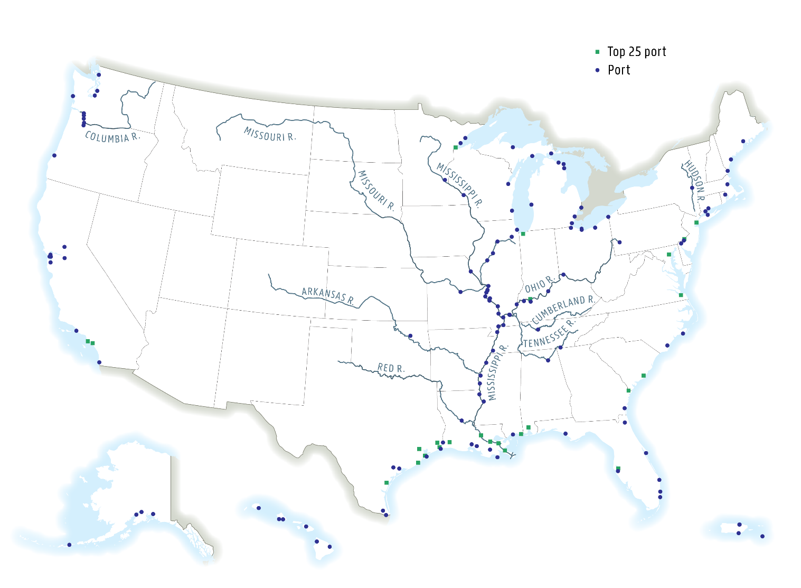
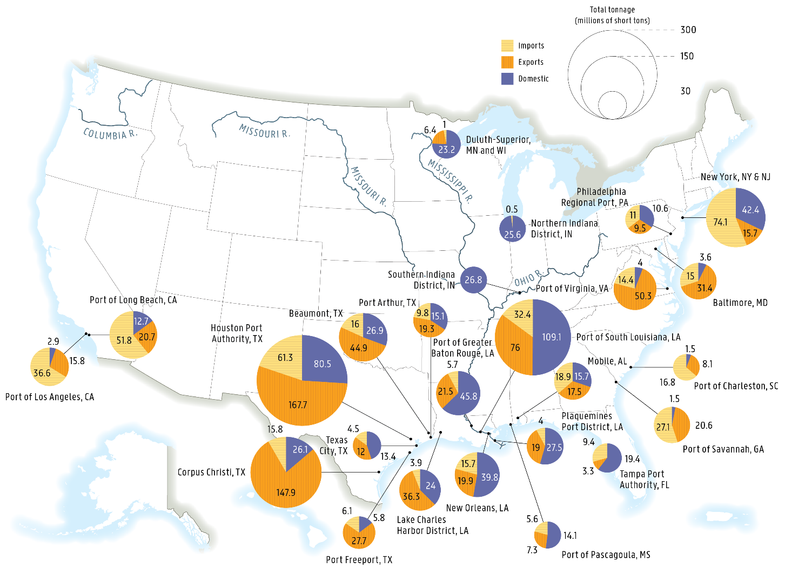
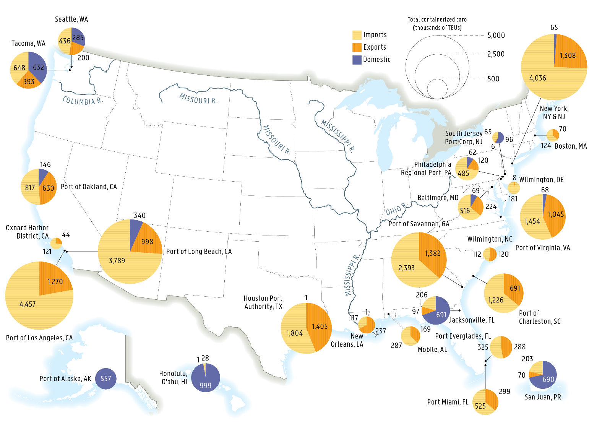
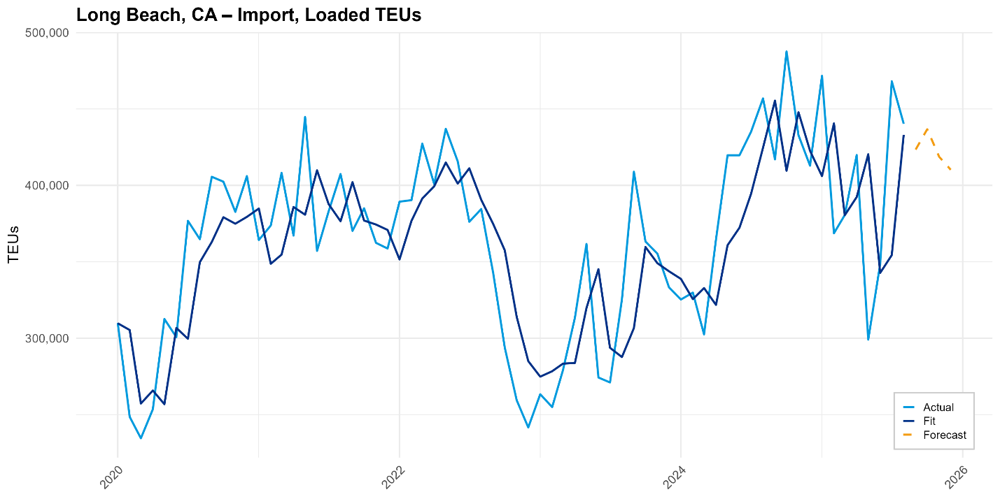
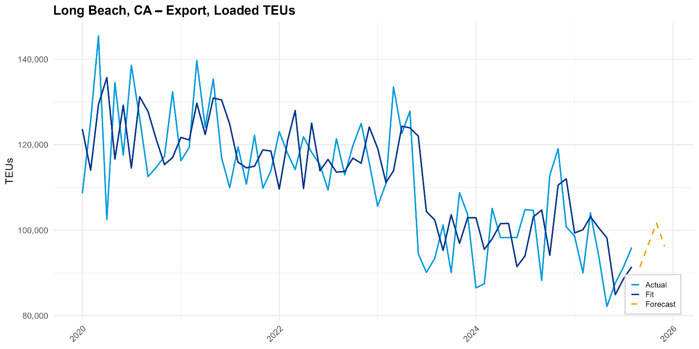
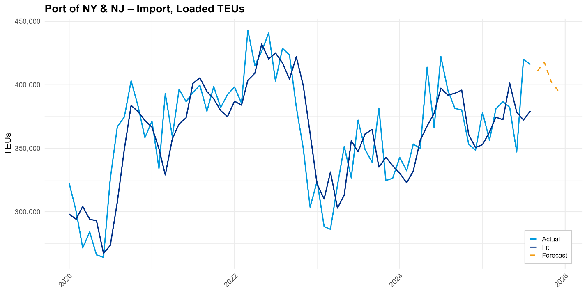

| Image | Source | Print ADA | Digital ADA | Text Contrast | Text Size (px / est pt) | Blur | DPI | Graphics Contrast | Colorblind | Grayscale | Colors (safe/fail/unknown) | Alt Text |
|---|
image1.png | word | False | False | 1.0 | 15 px / 28.871287128712865 | 2768.1 (ok=True) | 112.2 (ok=False) | 1.4049900770187378 (ok=False) | Risk | Risk | safe=1, fail=0, probably=0, unknown=11 | |
image2.png | word | False | False | None | None px / None | 3015.1 (ok=True) | 59.6 (ok=False) | 17.724674224853516 (ok=True) | Risk | OK | safe=1, fail=0, probably=0, unknown=11 | A group of ships in the water
Description automatically generated |

image3.png | word | False | False | 1.0 | 8 px / 5.1259063941990775 | 976.5 (ok=True) | 337.1 (ok=True) | 1.1568405628204346 (ok=False) | Risk | OK | safe=1, fail=5, probably=0, unknown=6 | |
image4.png | word | False | False | None | None px / None | 2908.6 (ok=True) | 59.6 (ok=False) | 18.384727478027344 (ok=True) | Risk | OK | safe=1, fail=0, probably=0, unknown=11 | A large ship in the water
Description automatically generated |
image5.png | word | False | True | None | None px / None | 2437.0 (ok=True) | 59.6 (ok=False) | 12.520947456359863 (ok=True) | OK | OK | safe=1, fail=0, probably=0, unknown=11 | A ship in the water
Description automatically generated |

image6.png | word | False | False | 1.0 | 1 px / 0.6689607708189951 | 4113.7 (ok=True) | 322.9 (ok=True) | 1.1792387962341309 (ok=False) | Risk | OK | safe=1, fail=4, probably=0, unknown=7 | |

image7.png | word | False | False | 1.0 | 7 px / 4.415314730694354 | 3644.1 (ok=True) | 342.4 (ok=True) | 1.158508062362671 (ok=False) | Risk | OK | safe=1, fail=6, probably=0, unknown=5 | |

image8.png | word | False | False | 1.0 | 1 px / 0.6307592472420506 | 3334.9 (ok=True) | 342.4 (ok=True) | 1.2073676586151123 (ok=False) | OK | OK | safe=1, fail=1, probably=0, unknown=10 | |

image9.png | word | False | False | 1.0 | 17 px / 11.571428571428573 | 2432.8 (ok=True) | 317.3 (ok=True) | 1.634250283241272 (ok=False) | Risk | OK | safe=1, fail=9, probably=0, unknown=2 | Picture 1, Picture |
image10.png | word | False | False | None | None px / None | 4176.6 (ok=True) | 59.6 (ok=False) | 19.14419937133789 (ok=True) | Risk | OK | safe=1, fail=9, probably=0, unknown=2 | A blue circle with a black background with ships in the water
Description automatically generated |

image11.jpeg | word | False | True | None | None px / None | 357.2 (ok=True) | 304.2 (ok=True) | 1.3922439813613892 (ok=False) | OK | OK | safe=1, fail=1, probably=0, unknown=10 | A picture containing text, nature
AI-generated content may be incorrect. |

image12.png | word | False | False | 1.0 | 3 px / 2.040587823652904 | 1233.0 (ok=True) | 317.6 (ok=True) | 3.0786337852478027 (ok=True) | Risk | OK | safe=1, fail=10, probably=0, unknown=1 | A graph showing a line of a graph
AI-generated content may be incorrect. |

image13.png | word | False | False | 1.0 | 3 px / 2.040587823652904 | 1309.4 (ok=True) | 317.6 (ok=True) | 3.079087972640991 (ok=True) | Risk | OK | safe=1, fail=10, probably=0, unknown=1 | A graph of blue lines
AI-generated content may be incorrect. |

image14.png | word | False | False | 1.0 | 3 px / 2.040587823652904 | 1296.0 (ok=True) | 317.6 (ok=True) | 4.9080705642700195 (ok=True) | Risk | OK | safe=1, fail=10, probably=0, unknown=1 | A graph showing a line of blue and white lines
AI-generated content may be incorrect. |

image15.png | word | False | False | 1.0 | 3 px / 2.040587823652904 | 1378.4 (ok=True) | 317.6 (ok=True) | 3.086775302886963 (ok=True) | Risk | OK | safe=1, fail=10, probably=0, unknown=1 | A graph showing a line of blue lines
AI-generated content may be incorrect. |

image16.png | word | False | False | 1.0 | 3 px / 2.040587823652904 | 1269.6 (ok=True) | 317.6 (ok=True) | 3.0703542232513428 (ok=True) | Risk | OK | safe=1, fail=10, probably=0, unknown=1 | A graph showing a line graph
AI-generated content may be incorrect. |

image17.png | word | False | False | 1.0 | 3 px / 2.040587823652904 | 1426.5 (ok=True) | 317.6 (ok=True) | 3.0896105766296387 (ok=True) | Risk | OK | safe=1, fail=10, probably=0, unknown=1 | A graph showing a line of blue lines
AI-generated content may be incorrect. |

image18.png | word | False | False | 1.0 | 1 px / 0.6109365179132622 | 2343.7 (ok=True) | 353.6 (ok=True) | 1.093291163444519 (ok=False) | OK | OK | safe=2, fail=3, probably=0, unknown=7 | A screenshot of a computer
Description automatically generated |

China Fig 1_chart_1.png | excel | False | False | 1.0 | 19 px / 11.357933579335795 | 857.2 (ok=True) | 361.3 (ok=True) | 1.443315863609314 (ok=False) | Risk | OK | safe=1, fail=10, probably=0, unknown=1 | |

China Fig 2_chart_2.png | excel | False | False | 1.0 | 23 px / 15.249658935879943 | 345.3 (ok=True) | 325.8 (ok=True) | 1.438605546951294 (ok=False) | Risk | OK | safe=1, fail=6, probably=0, unknown=5 | |

ContainerStdDev_chart_2.png | excel | False | False | 1.0 | 23 px / 12.731207289293849 | 736.0 (ok=True) | 390.2 (ok=True) | 1.4115333557128906 (ok=False) | Risk | OK | safe=1, fail=7, probably=0, unknown=4 | |

F 10_chart_6.png | excel | False | False | 1.0 | 24 px / 12.226415094339622 | 1380.7 (ok=True) | 424.0 (ok=True) | 1.418748378753662 (ok=False) | Risk | OK | safe=1, fail=9, probably=0, unknown=2 | |

F 11_chart_7.png | excel | False | False | 1.0 | 17 px / 9.415384615384616 | 854.3 (ok=True) | 390.0 (ok=True) | 1.417251467704773 (ok=False) | OK | OK | safe=1, fail=8, probably=0, unknown=3 | |

F 12_chart_8.png | excel | False | False | 1.0 | 21 px / 10.69811320754717 | 947.9 (ok=True) | 424.0 (ok=True) | 1.4169951677322388 (ok=False) | Risk | OK | safe=1, fail=8, probably=0, unknown=3 | |

F 13_chart_9.png | excel | False | False | 1.0 | 23 px / 11.716981132075473 | 1745.6 (ok=True) | 424.0 (ok=True) | 1.4190881252288818 (ok=False) | Risk | OK | safe=1, fail=7, probably=0, unknown=4 | |

F 14_chart_10.png | excel | False | False | 1.0 | 12 px / 7.405714285714287 | 437.5 (ok=True) | 350.0 (ok=True) | 4.719293117523193 (ok=True) | OK | OK | safe=1, fail=4, probably=0, unknown=7 | |

F 15_chart_11.png | excel | False | False | 1.0 | 15 px / 13.376146788990823 | 951.8 (ok=True) | 242.2 (ok=False) | 1.445942997932434 (ok=False) | Risk | OK | safe=1, fail=6, probably=0, unknown=5 | |

F 2-16_chart_1.png | excel | False | False | 1.0 | 22 px / 9.297391304347826 | 989.8 (ok=True) | 511.1 (ok=True) | 1.411532998085022 (ok=False) | Risk | OK | safe=2, fail=6, probably=1, unknown=3 | |

F 2_chart_1.png | excel | False | False | 1.0 | 14 px / 9.32054794520548 | 908.7 (ok=True) | 324.4 (ok=True) | 1.6416693925857544 (ok=False) | Risk | OK | safe=1, fail=4, probably=0, unknown=7 | |

F 4_chart_2.png | excel | False | False | None | None px / None | 1334.9 (ok=True) | 324.4 (ok=True) | 1.6416693925857544 (ok=False) | Risk | OK | safe=1, fail=4, probably=0, unknown=7 | |

F 6_chart_3.png | excel | False | False | 1.0 | 14 px / 9.32054794520548 | 709.3 (ok=True) | 324.4 (ok=True) | 1.6380752325057983 (ok=False) | OK | OK | safe=1, fail=4, probably=0, unknown=7 | |

F 9_chart_5.png | excel | False | False | 1.0 | 19 px / 10.097320940404593 | 599.5 (ok=True) | 406.4 (ok=True) | 1.6416693925857544 (ok=False) | OK | OK | safe=1, fail=4, probably=0, unknown=7 | |

F2_chart_2.png | excel | False | False | 1.0 | 16 px / 13.258312020460357 | 803.1 (ok=True) | 260.7 (ok=False) | 1.4115333557128906 (ok=False) | Risk | OK | safe=1, fail=7, probably=0, unknown=4 | |

F2_chart_3.png | excel | False | False | 1.0 | 5 px / 2.2935346861727224 | 552.2 (ok=True) | 470.9 (ok=True) | 1.3996191024780273 (ok=False) | Risk | OK | safe=1, fail=9, probably=0, unknown=2 | |

F3_chart_4.png | excel | False | False | 1.0 | 13 px / 11.33273542600897 | 992.9 (ok=True) | 247.8 (ok=False) | 1.3640984296798706 (ok=False) | Risk | OK | safe=1, fail=8, probably=0, unknown=3 | |

F3_chart_5.png | excel | False | False | 1.0 | 13 px / 4.700892857142857 | 465.0 (ok=True) | 597.3 (ok=True) | 1.4115333557128906 (ok=False) | Risk | OK | safe=1, fail=10, probably=0, unknown=1 | |

F4_chart_6.png | excel | False | False | 1.7260073766123871 | 17 px / 16.344213649851632 | 1008.4 (ok=True) | 224.7 (ok=False) | 1.391349196434021 (ok=False) | Risk | OK | safe=1, fail=8, probably=0, unknown=3 | |

Fig 3-1_chart_2.png | excel | False | False | 1.0 | 23 px / 14.194285714285714 | 740.5 (ok=True) | 350.0 (ok=True) | 2.960169792175293 (ok=False) | Risk | OK | safe=1, fail=4, probably=0, unknown=7 | |

Fig 3-2_chart_3.png | excel | False | False | 1.0 | 22 px / 11.09704203425013 | 589.6 (ok=True) | 428.2 (ok=True) | 2.46034574508667 (ok=False) | Risk | OK | safe=1, fail=7, probably=0, unknown=4 | |

Tanker_chart_3.png | excel | False | False | 1.0 | 23 px / 13.52450090744102 | 395.7 (ok=True) | 367.3 (ok=True) | 1.4115333557128906 (ok=False) | Risk | OK | safe=1, fail=5, probably=0, unknown=6 | |

all years Fig 3-1_chart_1.png | excel | False | False | 1.0 | 23 px / 11.029107054760729 | 711.9 (ok=True) | 450.4 (ok=True) | 4.620082855224609 (ok=True) | Risk | OK | safe=1, fail=7, probably=0, unknown=4 | |